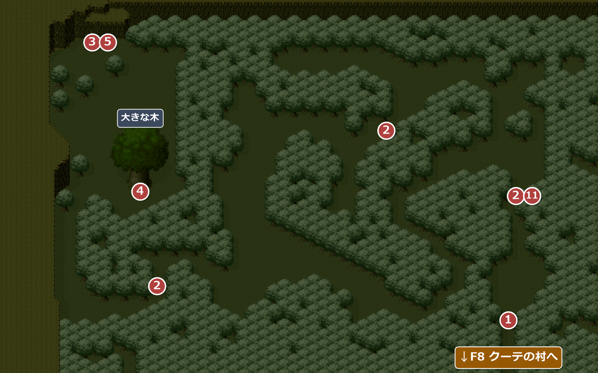
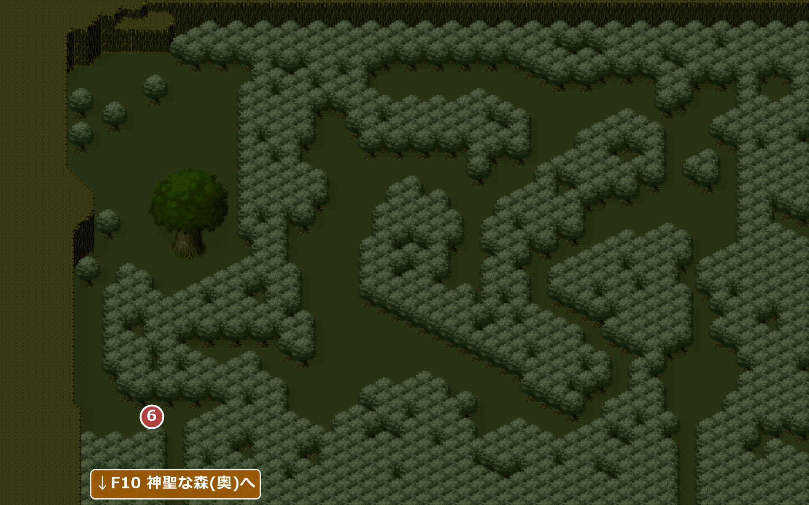
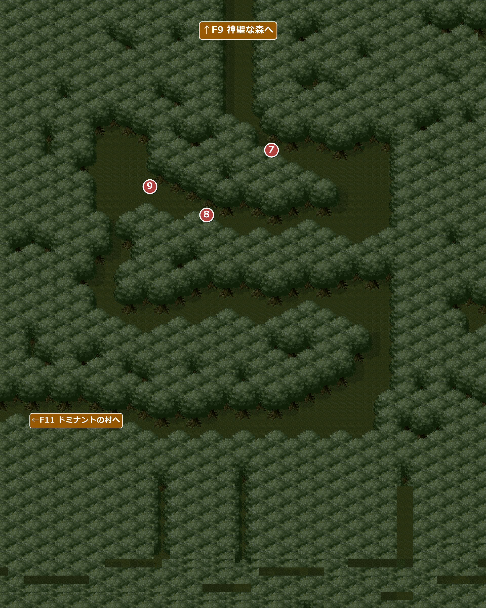
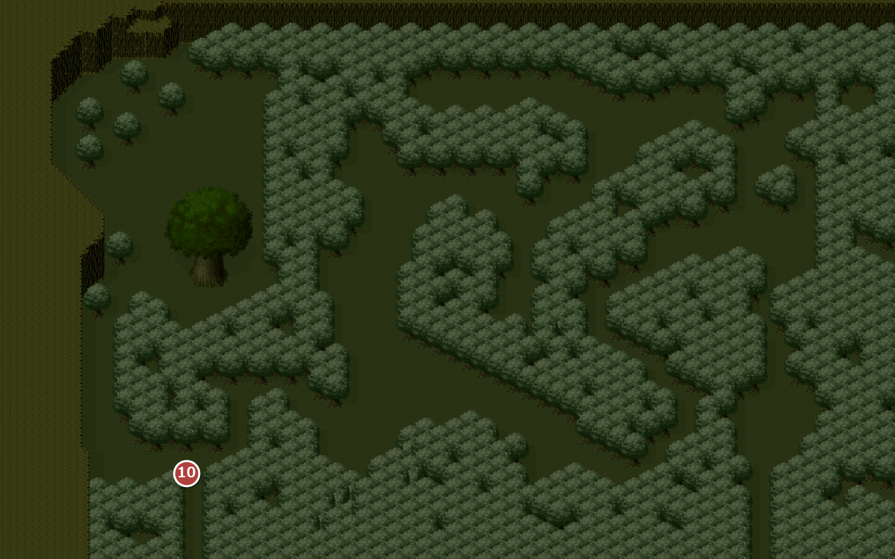

FIELD9・10
神聖な森
エンカウント率0% / 0.78% / 1.17%クーテの村の北西に広がる森。クイクイの友達シベリンを探しに入る。
名前 建物・場所→ ほかの FIELD へ1メインイベント
900F9 神聖な森(行き)

エンカウント
1歩ごとに 0.78%(平均 128 歩に1回)。戦闘になったときに出る組と、その確率:
| ID | 確率 | 前列 | 後列 |
|---|---|---|---|
| 17 | 33.3% | 毒ヅタ×2 | － |
| 18 | 33.3% | レインキャット×2 | － |
| 19 | 22.2% | 毒ヅタ | レインキャット |
| 20 | 11.1% | コブララット | － |
イベント
1
道をふさぐ倒木
場所: 森の入口(X200-206 Y129)
入口を倒木がふさいでいる。クイクイがいれば、みんなで力を合わせて倒木をどかし、先へ進めるようになる。
クイクイを仲間にする前は、主人公が「いったん町に戻るか」と引き返すだけで進めない。
クイクイを仲間にする前は、主人公が「いったん町に戻るか」と引き返すだけで進めない。
次へ森の奥へ(②)。
2
シベリンの笛
場所: 森の中の3か所(X204-208 Y79・X154 Y51-57 ほか・X60-66 Y115)
森の中で笛の音が聞こえてくる。クイクイがシベリンに教えた笛の音で、音をたどればシベリンが見つかるという。奥へ進むと、そのたびに笛の音が聞こえ、だんだん近づいてくる。
！このとき流れるシベリンの笛の曲は、ゲーム中この森の3か所でしか聞けない。
次へ森の北西へ(③)。
3
降りられないシベリン
場所: 森の北西の崖の上(X38 Y17)
崖の上にシベリンがいるが、自分では降りられない。クイクイが登って助けようとすると、連れている仲間が一言かける。
結局クイクイは登れず、ロープを探すことになる。
| 連れている仲間 | セリフ |
|---|---|
| ドムカ | 「ボウズ、無茶するなよ」 |
| スリム | 「あ～ら、ぼうや、勇敢ねぇ」 |
| ジョーイ | 「クイクイくん、無茶しちゃダメよ！」 |
次へロープを探す(④)。
4
大きな木の太いロープ
場所: 大きな木の根元(X50-60 Y75-77)
③の後で、大きな木に巻かれたロープを調べる。アイリスは「なにか意味がありそう…」とためらうが、クイクイは「誰も見ていないし。ちょっと借りるだけ」とロープを取ってしまう。その瞬間、白い何かが飛び去っていく。
入手 太いロープ
太いロープ
次へシベリンの所へ戻る(⑤)。
5
シベリンを助ける
場所: 森の北西の崖の上(X38 Y17)
太いロープを投げてシベリンを助ける(ロープはなくなる)。シベリンは先に帰り、一行もクーテに戻ろうとすると、森の道が変わった帰り道のマップに移る。
このイベントが発生すると、しばらくクーテの村へ戻れない。特に、次の村の武器屋には手裏剣が売っていない。スリムを連れている場合は、先にクーテの武器屋で投げ釘(手裏剣)に更新しておかないと、この先厳しい。
次へ帰り道を進む(⑥)。
901F9 神聖な森(シベリンを助けた後の帰り道)

エンカウント
1歩ごとに 1.17%(平均 85.3 歩に1回)。戦闘になったときに出る組と、その確率:
| ID | 確率 | 前列 | 後列 |
|---|---|---|---|
| 17 | 33.3% | 毒ヅタ×2 | － |
| 18 | 33.3% | レインキャット×2 | － |
| 19 | 22.2% | 毒ヅタ | レインキャット |
| 20 | 11.1% | コブララット | － |
シベリンを助けると、森の道が変わったこのマップに移る。左下の出口から F10 へ進む(クーテの村の側へは実質戻れない)。
イベント
6
道が違う
場所: 帰り道の左下(X44 Y121-127)
クイクイが、来たときと道が違うことに気づく。
次へ左下の出口から F10 へ(⑦)。
1000F10 神聖な森(奥)

エンカウント
エンカウントなし。
！マップの下の部分は、普通にプレイしていると画面に映らない所なので、作りが荒いままになっている。
イベント
7
誰かの視線
場所: F10 入ってすぐの右(X66 Y37-39)
誰かにじっと見られているような気配がする。スリムを連れているときだけ、続けて次のやり取りがある。
スリム「おほほほ…いやだわ。わたしを見つめるなんて…カッコイイ殿方かしら…」クイクイ「おじさん…。おとこだよねぇ？」スリム「ほほほ…。お子様には知らなくていい事が世の中にはあるのよ」
スリム「おほほほ…いやだわ。わたしを見つめるなんて…カッコイイ殿方かしら…」クイクイ「おじさん…。おとこだよねぇ？」スリム「ほほほ…。お子様には知らなくていい事が世の中にはあるのよ」
次へ森の奥へ(⑧)。
8
不気味な鳥の声
場所: F10 森の中(X50 Y53-55)
不気味な鳥の声が聞こえる。続けて、連れている仲間が一言。
| 連れている仲間 | セリフ |
|---|---|
| ドムカ | 「…」 |
| スリム | 「ほんと、いやな声ねぇ…」 |
| ジョーイ | 「何かこの先にあるのかも知れないわ。みんな、気をつけてね！」 |
次へ森の奥へ(⑨)。
9
さらわれる
場所: F10 森の奥の左(X36 Y43-51)
シベリンが異変に気づいた直後、一行は何者かに囲まれる。続けて、連れている仲間が一言。
一行はシベリンとともに、ドミナントの村へ連れて行かれる。
| 連れている仲間 | セリフ |
|---|---|
| ドムカ | 「…」 |
| スリム | 「あんたたち、何者？」 |
| ジョーイ | 「あなたたち、何をする気？」 |
次へF11 ドミナントの村へ(自動)。
ドミナント編のあと
902F9 神聖な森(F10 から戻ったとき)

エンカウント
1歩ごとに 1.17%(平均 85.3 歩に1回)。戦闘になったときに出る組と、その確率:
| ID | 確率 | 前列 | 後列 |
|---|---|---|---|
| 17 | 33.3% | 毒ヅタ×2 | － |
| 18 | 33.3% | レインキャット×2 | － |
| 19 | 22.2% | 毒ヅタ | レインキャット |
| 20 | 11.1% | コブララット | － |
ドミナント編のあとに F10 の北の出口から森へ戻ると、このマップが一瞬だけ表示され、すぐに行きのマップ(900)の左下へ移される。到着した所から戻されるマス(⑩)までは上へ3マスで、そのあいだだけエンカウントがある。出てくる敵の組は行きのマップと同じだが、エンカウント率は1歩あたり約1.17%で、行きのマップ(約0.78%)の1.5倍に設定されている。
イベント
10
来た道が閉ざされる
場所: F10 から戻ってすぐ(X46-54 Y127)→ 行きのマップの左下(X52 Y127)
F10 の北の出口から森へ戻ると、一瞬だけこのマップが表示され、すぐに行きのマップの左下へ移される。クイクイは、森が閉じたのも魔法なのかと不思議がる。
このイベントが発生すると、F10 と F11〜13 の全区域に戻れなくなる。やり残しが無いか確かめてから、F10 の北の出口を出ること。
次へ森の中の②の場所へ(⑪)。
11
夜を待とう
場所: 行きのマップ(900)の②と同じ場所(X204-208 Y79)
クイクイによると、リンリン草の草原を抜けた先にフォープキンの家がある。草原は夜に渡らなければならず、夜に光るリンリン草が示す道を外れると、バング草を踏んで爆発してしまう。クイクイに「夜になるまで、宿屋にいようよ！」と言われる。
次へ↓F8 クーテの村へ戻り、クーテの宿屋で夜を待つ。
没イベント情報
- 没帰り道のマップの右下(入口の倒木の位置)にも「道が違う」のマスが残っている … X200-206 Y129。帰り道のマップでは行けない場所にあり、発生しない(行きのマップの作りの名残)